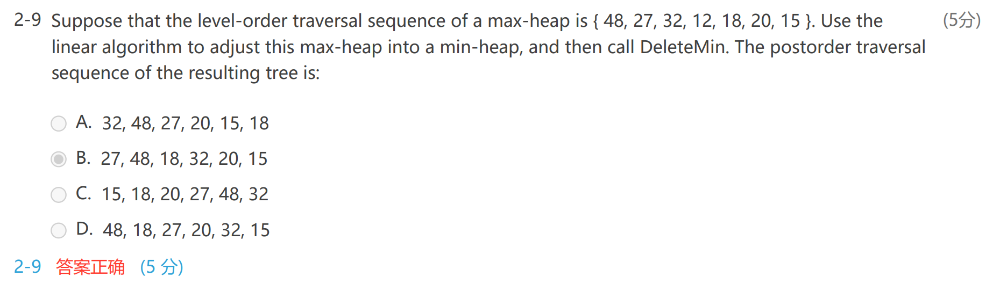

Ch.05 Priority Queues (Heaps)
Priority queues
delete the element with the highest / lowest priority
ADT Model¶
- Objects: A finite ordered list with zero or more elements
- Operations
PriorityQueue Initialize( int MaxElements );
void Insert( ElementType X, PriorityQueue H );
ElementType DeleteMin( PriorityQueue H );
ElementType FindMin( PriorityQueue H );
Simple Implementations¶
Array¶
- Insertion, \(\Theta(1)\)
- Deletion
- find the largest / smallest \(\Theta(n)\)
- remove the item and shift array \(O(n)\)
Linked List Usually Best¶
- Insertion
- add to the front \(\Theta(1)\)
- Deletion
- find \(\Theta(n)\)
- remove \(\Theta(1)\)
- Why best
- deletion 永远比 insertion 小，inserrtion 次数多，使得插入更小就好
Ordered Array¶
- Insertion
- find the proper position \(O(n)\)
- shift \(O(n)\)
- Deletion: delete the last \(O(1)\)
Ordered Linked List¶
- Insertion:
- find position \(O(n)\)
- insert \(\Theta(1)\)
- Deletion: delete first/last item \(\Theta(n)\)
Binary Search Tree¶
- 由于总是删除左下角的节点，二叉树一定会不平衡
- 维护一个平衡二叉树？ AVL Tree in ads
Binary Heap¶
Structure Property¶
Definition¶
- A binary tree with n nodes and height h is complete iff its nodes correspond to the nodes numbered from 1 to n in the prefect binary tree of height h. 也就是完全二叉树，但是只有前 n 个节点
- ![[Ch.04 Trees#^bfe95b]]
- 对于一个高度为 h 的二叉树，有 \([2^h,2^{h+1}-1]\) 个元素
- \(h=\lfloor\log_2 N\rfloor\)
Array Representation¶
- 使用 BT[N+1]，第零个 index 实际没有用
- for any node with index i, we have:
- 父亲为 i/2 向下取整
- \(parent(i)=\,\lfloor i/2\rfloor (i\ne 1), \space None(i=1)\)
- 左孩子为 2i
- \(left\_child(i)=\,2i(2i\le n),\space None(2i>n)\)
- 右孩子为 2i+1
- \(right\_child(i)=\,2i+1(2i+1\le n),\space None(2i+1>n)\)
- 父亲为 i/2 向下取整
- 初始化的时候，在第零个 index 设置一个最小的值，称为 sentinel 哨兵
PriorityQueue Initialize( int MaxElements )
{
PriorityQueue H;
if(MaxElements < MinPQSize) return Error("Priority queue size is too small"); // too small size, no need for a queue
H = malloc(sizeof(struct HeapStruct));
if(H == NULL) return FatalError("Out of space!!");
/*allocate the array plus one extra for sentinel*/
H->Elements = malloc((MaxElements + 1)*sizeof(ElememtType));
if(H->ELements == Null) return FatalError("Out of space!!");
H->capacity = MaxElements; // max allowed num of elements
H->Size = 0; // current, no elements
H->Elements[0] = MinData; // sentinel
return H;
}
Heap Order Property¶
- 最小树：每个节点的值都不比孩子大
- 最小堆：是一个完全二叉树，也是一个最小树，最小值在根
- 最大堆，最大值在根
Basic Heap Operations¶
Insertion¶
- 插入之后树的结构是一定的，因为要保持 index 连续
- 插入到新开的节点，如果比父节点大，就互换，并递归比较互换 Percolate Up
void insert( ElementType X, PriorityQueue H )
{
int i; // node ptr
if(isFull(H)){
Error("Priority queue is full!!");
return;
}
for(i = ++H->size; H->Element[i/2] > x; i/=2){ // 零号有哨兵，不需要判断是否为根节点
H->Elements[i] = H->Elements[i/2]; // Procolete up, dont swap!!!
}
H->Elements[i] = x;
}
DeleteMin¶
- 先把最大 index 的元素写到根节点
- 找到根节点左右孩子中最小的，如果比它大，与其交换 Percolate Down
- 递归调用
- \(O(logn)\)
ElementType DeleteMin( Priority Queue H)
{
int i, Child; // ptrs
ElementType MinElement, LastElement;
if(IsEmpty(H)){
Error("Priority queue is empty");
return H->Elements[0]; // return the sential
}
MinElement = H->Elements[1]; // save the smallest
LastElement = H->Elements[H->Size--]; // take last and reset szie
for(i = 1; i*2 <= H->Size; i = Child){ // find smaller child
Child = i*2; // find left child
if(Child != H->Size && H->ELements[Child+1] < H->Elements[Child]) Child++; // if there is smaller right child, jump to it
if(LastElement > H->Elements[Child]) H->Elements[i] = H->Elements[Child]; // percolate down one level
else break; // proper postion found
}
H->Elements[i] = LastElement; // put it there
return MinElement;
}
Other Heap Operations¶
DecreaseKey(P, delta, H) Percolate up¶
- Lower the value of the key in the heap H at position P by a positive amount of delta
- 同样，取出，然后 percolate这样不需要 swap，找到正确位置写入
IncreaseKey(P, delta, H) Percolate down¶
- Increases the value ofthe key in the heap H at position P by a positive amount of delta
- 取出，然后 percolate 注意要找比较小的孩子，找到正确位置，写入
Delete(P, H) 删除第 P 个元素¶
- DecreaseKey(P, infty, H); DeleteMin(H); 变成根节点，然后 deleteMin
BuildHeap(H) 将一个数组排列成堆¶
- 先构建堆（写入数组）
- PercolateDown(7, 6, 5, 4, ....)
- 从 index 最大的父节点开始 percolate down
- 时间复杂度
- 考虑满二叉堆，一共 \(2^{h+1}-1\) 个节点，所有节点的高度之和 \(2^{h+1}-1-(h+1)\)，所以：
- \(T(N)=O(N)\)
- 如果使用 insert 操作，每次 logN，一共执行 N 次，效率较低
- 考虑满二叉堆，一共 \(2^{h+1}-1\) 个节点，所有节点的高度之和 \(2^{h+1}-1-(h+1)\)，所以：
Applications of Priority Queues: Find the kth largest element¶
- 建立最大堆
- 进行 k-1 次 deleteMin，每次 \(\log N\)
- \(T(N)=O(N)\)
d-Heaps¶
- 所有的 node 都有 d 个孩子，比如 3-heap
- 事实上，计算的时候 *2 和 /2 都是移位操作，所以 binary 最快
Exercises¶
HW 6¶
2-2¶
-
Using the linear algorithm to build a min-heap from the sequence {15, 26, 32, 8, 7, 20, 12, 13, 5, 19}, and then insert 6. Which one of the following statements is FALSE?
- A. The root is 5
- B. The path from the root to 26 is {5, 6, 8, 26}
- C. 32 is the left child of 12
- D. 7 is the parent of 19 and 15
-
什么是 linear algorithm ?
- 先将元素写成堆的样子
- 然后从最后一个父节点开始
PercolateDown
Complete Binary Search Tree¶
- sort the input array
- inorder write into the CBT
void inorderInsert(int* array, int* CBST, int N, int* indexArray, int indexCBST)
{
if(indexCBST >= N) return; // invalid node, exit
inorderInsert(array, CBST, N, indexArray, indexCBST*2+1); // left
CBST[indexCBST] = array[*indexArray]; // root
(*indexArray)++;
inorderInsert(array, CBST, N, indexArray, indexCBST*2+2); // right
}
- 仍然要注意
(*p)++的问题
Midterm¶
- In the binary MAX heap built from the array { 25, 14, 28, 51, 27, 11, 33, 20, 39, 23 }, the index of 39 is 1 (note that the index starts from 0)
- 这里都说了 index 从 0 开始，就不要按照 heap 的定义来了
Review¶

- 直接将这个 max heap percolate down，这就是 linear algorithm 的含义